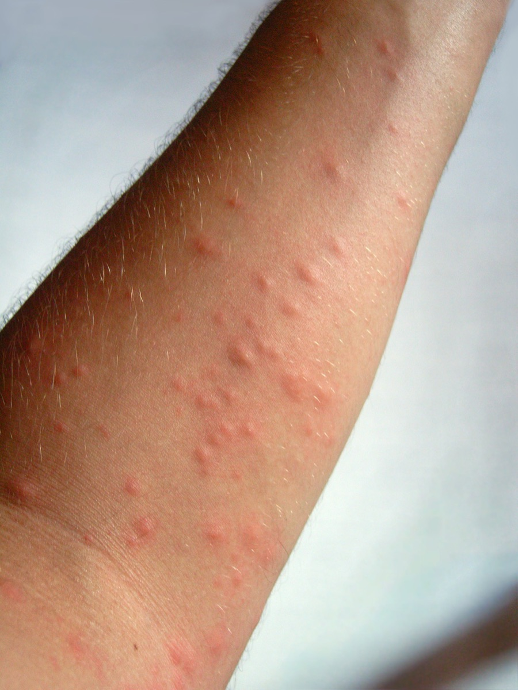

Der Eichenprozessionsspinner ist in diesem Sommer wieder auf dem Vormarsch – und betrifft längst nicht mehr nur Wälder und Forstgebiete. Immer häufiger melden Kommunen, Schulen und besorgte Eltern Befälle an Eichen direkt neben Spielplätzen, Parkanlagen und öffentlichen Grünflächen. Was steckt hinter dieser Entwicklung, wo lauern die größten Risiken – und was können Betroffene jetzt konkret tun?
Berichte aus verschiedenen Regionen Deutschlands zeigen ein einheitliches Bild: Der Eichenprozessionsspinner breitet sich weiter aus und erreicht Orte, die bisher kaum betroffen waren. Forstbehörden und Kommunen schlagen Alarm, weil die Gespinste der Raupen in Parks, an Straßenrändern und auf Schulgeländen auftauchen – mitten im Alltag der Bevölkerung.
Der Grund für die starke Verbreitung liegt in einer Kombination aus milden Wintern, trockenen Frühjahrsmonaten und einem wachsenden Eichenbestand in städtischen Gebieten. Diese Bedingungen begünstigen die Entwicklung der Raupen enorm. Hinzu kommt, dass natürliche Fressfeinde wie bestimmte Vogelarten oder Parasitoide die Massenvermehrung allein nicht mehr einbremsen können. Das Ergebnis: Ganze Eichenalleen und Grünstreifen sind in kurzer Zeit befallen.
Was den Eichenprozessionsspinner so gefährlich macht, sind nicht die Raupen selbst, sondern ihre mikroskopisch kleinen Brennhaare. Ab dem dritten Larvenstadium bilden die Tiere diese feinen Haare, die einen Eiweißstoff namens Thaumetopoein enthalten. Geraten diese Haare auf Haut, Augen oder Schleimhäute, können sie starke allergische Reaktionen auslösen – von intensivem Juckreiz über Hautausschläge bis hin zu Atemnot.
Besonders tückisch: Die Haare lösen sich aus den Gespinsten und werden vom Wind verteilt. Man muss also nicht einmal direkten Kontakt mit den Raupen haben, um Beschwerden zu bekommen. Ein Ausflug in den Park, eine Pause unter einer Eiche oder das Spielen im Freien kann ausreichen. Kinder sind besonders gefährdet, da ihre Haut empfindlicher reagiert und sie sich naturgemäß viel im Freien aufhalten. Beschreibungen wie „hundert Schnakenstiche auf einmal
Viele Menschen verbinden den Eichenprozessionsspinner noch immer mit Wäldern und abgelegenen Forstgebieten. Doch die Realität in diesem Jahr sieht anders aus: Befallene Eichen stehen oft direkt neben Kinderspielplätzen, auf Schulgeländen, entlang von Radwegen oder am Rand öffentlicher Rasenflächen. Genau dort halten sich Familien täglich auf.
Das Problem: Gespinste und Raupen sind für Laien nicht immer auf den ersten Blick erkennbar. Oft hängen die dichten Nester gut versteckt im Kronenbereich, während die Brennhaare bereits im Umkreis verteilt sind. Kommunen sind zwar zunehmend sensibilisiert, doch die Kapazitäten für schnelle Maßnahmen sind begrenzt. Für Eigentümer von Privatgrundstücken mit Eichenbestand gilt: Die Verantwortung für Schutzmaßnahmen liegt in der Regel bei ihnen selbst. Wer abwartet, riskiert, dass sich der Befall weiter ausbreitet und die Gefahrenzone wächst.
Bei einem bestätigten oder vermuteten EPS-Befall sollte man betroffene Bereiche weiträumig absperren und nicht eigenmächtig versuchen, Gespinste zu entfernen. Das direkte Hantieren mit Nestern ohne Schutzausrüstung ist gefährlich und kann zu akuten gesundheitlichen Problemen führen. Rufen Sie im Zweifel die zuständige Gemeinde oder einen spezialisierten Dienstleister an.
Eine besonders effektive und schonende Methode zur Bekämpfung ist die Drohnenbehandlung. Dabei wird ein biologisches Pflanzenschutzmittel auf Basis von Bacillus thuringiensis var. kurstaki (Btk) gezielt aus der Luft auf befallene Bäume aufgebracht. Der Wirkstoff ist für Menschen, Haustiere und die meisten Nützlinge unbedenklich, tötet aber die EPS-Raupen zuverlässig im frühen Larvenstadium ab. So lassen sich auch schwer zugängliche Baumkronen oder große Flächen behandeln, ohne den Alltag der Anwohner zu beeinträchtigen.
Insektenblitz bietet genau diesen Service – schnell, sicher und deutschlandweit. Wenn Sie unsicher sind, ob Ihre Eichen befallen sind, oder wenn Sie präventiv handeln möchten, nutzen Sie jetzt unsere kostenlose Erstberatung. Gemeinsam finden wir die passende Lösung für Ihr Grundstück, Ihre Gemeinde oder Ihre Einrichtung.
Kostenlose Erstberatung durch unsere Experten. Wir beurteilen Ihren Fall und erstellen ein individuelles Angebot.
📞 +49 5234 9089310 anrufen